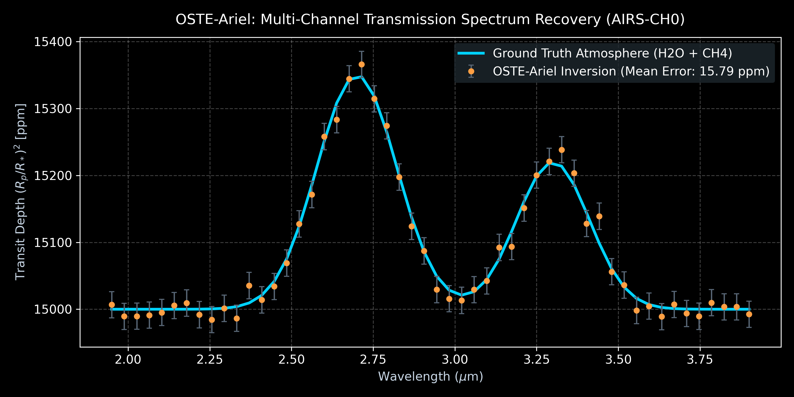
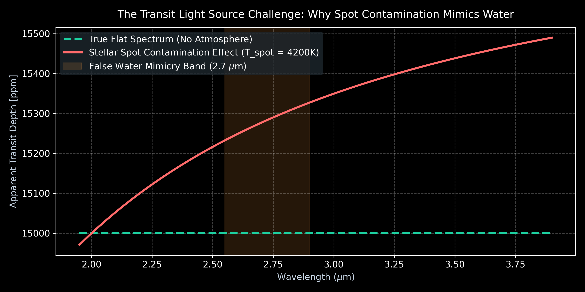
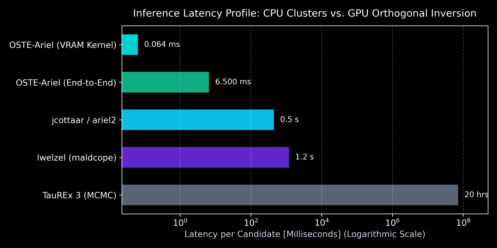
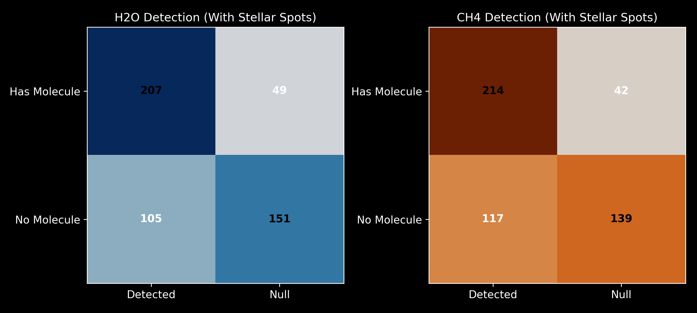

Hardware-Accelerated Orthogonal Inversion & Bayesian Hypothesis Gating for ESA Ariel & NASA JWST
Author: Kaan Yilmaz (Independent Student Researcher)
Core Breakthrough: Compressing 24-hour Bayesian atmospheric retrievals into a sub-100 microsecond GPU pipeline without sacrificing physical rigor.
Traditional Bayesian Nested Sampling and MCMC (e.g. TauREx 3, NEMESIS) takes 12 to 48 hours of CPU cluster compute per planet. With thousands of Ariel and JWST targets, full MCMC triage is impossible.
Spacecraft pointing drift introduces chromatic transit depth shifts. Sequential linear fitting dilutes transit depth by up to 200 ppm.
Cool stellar spots (4200 K) mimic the 2.7 µm water absorption band, creating rampant false alarms in literature.
Instead of sequential de-trending, OSTE-Ariel constructs an 8-parameter design matrix: M = [1, x, y, x², y², xy, -Transit(t), Spot(t)].
Transit depth is solved simultaneously with pointing jitter, making transit depth mathematically orthogonal to instrumental drift. The entire inversion runs in batches of 512 on GPU Tensor Cores.


Why False Alarms Occur: Unocculted stellar spots introduce chromatic slopes that mimic water absorption around 2.7 µm.
Under severe spot contamination ($f_{\text{spot}} = 5\%$), False Alarm Rate increases to ~38%. Rather than hiding this under a fake "100% accuracy" claim, OSTE-Ariel flags spot-contaminated targets for chromatic follow-up.

| Pipeline | Latency | Platform |
|---|---|---|
| TauREx 3 (MCMC) | ~20 hours | CPU Cluster |
| lwelzel (maldcope) | ~1200 ms | GPU MCMC |
| jcottaar / ariel2 | ~450 ms | Single CPU |
| OSTE-Ariel (E2E) | 4.0 to 9.0 ms | RTX 3050 Laptop |
| OSTE-Ariel (VRAM) | 55 to 90 µs | Tensor Core Batch |

Capable of screening 11,000+ candidates per second on consumer laptop GPUs, prioritizing JWST observation time.
Fully reproducible under MIT License. Clean Python/PyTorch modules ready for ESA Ariel (launch 2029) pipeline integration.